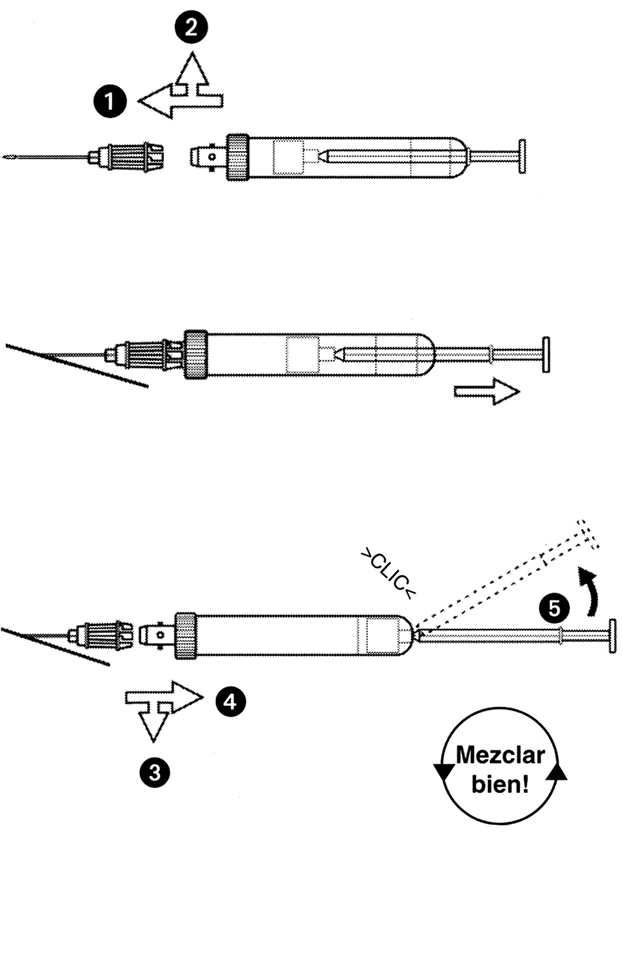
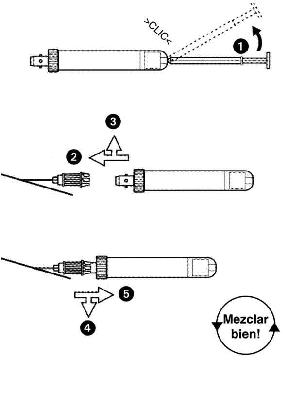
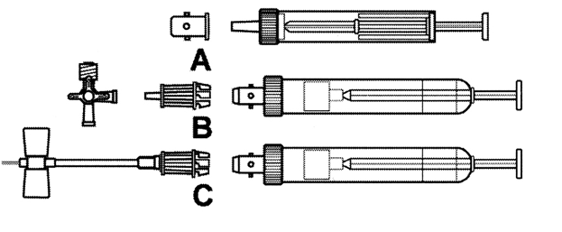
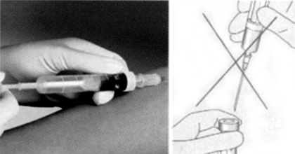
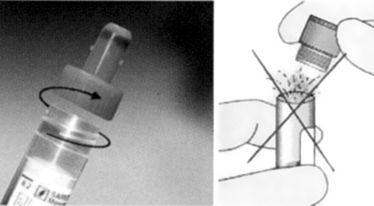
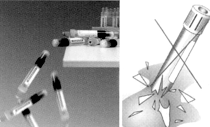
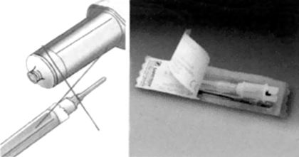
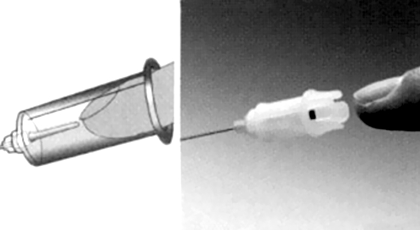
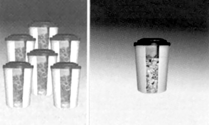
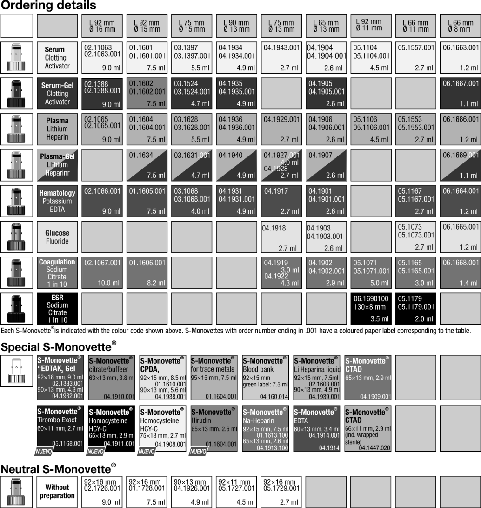

S-monovette®
Sistema alternativo para la toma de muestra de sangre
DESCRIPCIÓN:
Es el único sistema que permite decidir al usuario, dependiendo de las características clínicas y físicas del paciente, si se emplea el principio de aspiración o el principio al vacío al momento de la recolección sanguínea. El S-MONOVETTE® es un sistema 100% cerrado, está diseñado para ser siempre el tubo de recolección primario; es decir, el usuario no tendrá la necesidad de trasvasar el suero o plasma a un tubo de vidrio secundario, así como no tendrá la necesidad de multipuncionar a un paciente al recolectar una muestra, por difícil que sea: curvas de tolerancia a la glucosa, gases acompañados de una toma múltiple, muestras captadas de un catéter, etc.
CARACTERÍSTICAS:
El S-MONOVETTE® es de polipropileno, su tapón es de polietileno de alta densidad roscado, evita el efecto aerosol que es común en los sistemas convencionales. Los sistemas comunes son de PET o siguen siendo de vidrio. El sistema S-MONOVETTE® es irrompible. No padece el problema de pérdida de vacío por almacenamiento o embalaje, ya que el sistema S-MONOVETTE® no tiene vacío, el usuario lo genera en el momento de la recolección con base en las características atmosféricas del entorno donde se encuentre; por lo tanto es el único sistema que garantiza el perfecto llenado al volumen especificado. Una de las grandes innovaciones de SARSTEDT es la de brindar al usuario el uso de una aguja nueva y desechable, así como el holder, sujetador o soporte nuevo y desechable; ya que la aguja S-MONOVETTE® incluye el holder. Contamos con volúmenes nominales representativos para cada tipo de paciente que van desde: 1.1, 1.2, 1.4, 2.0, 2.6, 2.7, 3.0, 4.9, 7.5 y 9.0 ml en toda la nomenclatura de colores del sistema americano.
INSTRUCCIONES DE USO:

Principio de aspiración
a. Inmediatamente antes de la extracción venosa, conectar la
S-MONOVETTE® en la aguja y asegurarla con un ligero giro en la dirección de las agujas del reloj (u+v).
b. Puncionar la vena, aflojar el torniquete y tirar del émbolo lentamente. Esperar hasta que la sangre deje de fluir.
c. Retirar la aguja con un ligero giro en la dirección contraria a las agujas del reloj (w+x). La aguja continúa en la vena.
d. Para extracción múltiple asegurar las siguientes S-MONOVETTE® en la aguja y extraer como se describe arriba.
Finalización de la extracción:
e. Por último retirar S-MONOVETTE® de la aguja (w+x), entonces extraer la aguja de la vena.
Recuerde: RETIRAR LA S-MONOVETTE®, DESPUÉS EXTRAER LA AGUJA.
f. ¡Mezclar la(s) muestra(s) con el anticoagulante cuidadosamente!
g. Para transporte y centrifugación, fijar el pistón en la base de la S-MONOVETTE® y romper el émbolo (y).
.
Principio de vacío
Previamente a la extracción de sangre, la aguja S-MONOVETTE® debe estar en la vena. Se succiona la vena directamente con la aguja o se extrae la primera muestra utilizando el principio de aspiración, entonces se aplica el principio de vacío.
a. Antes de la extracción de sangre, conectar la S-MONOVETTE®. Una vez asegurado se rompe el émbolo (u).
b. Aflojar el torniquete, conectar la S-MONOVETTE® en la aguja y asegurarla con un ligero giro en la dirección de las agujas del reloj (v+w).
c. Esperar hasta que la sangre deje de fluir.
d. Retirarla de la aguja con un ligero giro en la dirección contraria a las agujas del reloj (x+ y). La aguja continúa en la vena.
e. Para extracción múltiple, asegurar las siguientes S-MONOVETTE® en la aguja y extraer las muestras como se describe arriba.
Finalización de la extracción:
f. Retirar la última S-MONOVETTE® en la aguja (x+ y), entonces extraer la aguja de la vena.
Recuerde: RETIRAR LA S-MONOVETTE® DESPUÉS EXTRAER LA AGUJA.
g. ¡Mezclar las muestra(s) con el anticoagulante cuidadosamente!

Características de seguridad primarias

Principio de aspiración
Al elegir el principio de aspiración en la recolección de sangre con la
S-MONOVETTE® eliminamos el uso de jeringuillas y el riesgo que implica trasvasar la muestra a un tubo secundario.

Eliminación del efecto aerosol
El tapón roscado facilita la apertura de manera suave del tubo, evitando el efecto aerosol muy común en los sistemas convencionales.

Resistente al impacto
El exclusivo uso de materiales plásticos resistentes contra impactos, asegura un manejo confiable de las muestras sanguíneas.

Listo para usar
Elimina el riesgo de contagio infeccioso por el ensamble de agujas y holder reusados, contaminados con sangre.

Diseño seguro
Su singular diseño previene cualquier contacto no intencional con el holder o la aguja.

Reduce el volumen del desecho y el costo
Reduce el volumen y el costo del desperdicio infeccioso por el uso de agujas y holders.
CÓDIGOS DE PRODUCTO:

DATOS COMPLEMENTARIOS: Para mayor información comunicarse a:
SARSTEDT MÉXICO S. DE R.L. DE C.V.
Teléfono: (55) 8501-1577
Fax: 8501-1578
e-mail: info.mx@sarstedt.com
y en nuestra página www.sarstedt.com